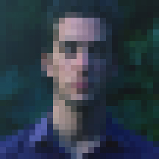

Our Team

Miles Crettien
Co-Founder
Miles is a graduate of Ithaca College where he received a BA in Environmental Science and Business Management. There, Miles focused his research on the mechanisms behind plant defenses and biofuel production and lead a project to build a biodiesel processing facility at an eco-reserve in the heart of the Ecuadorian Cloud Rainforest. Additionally, Miles worked five years as an organic vegetable grower on farms throughout Massachusetts. Using his experiences in agriculture and research, Miles has lead numerous initiatives to promote the practice of urban agriculture in NYC, including co-founding VertiCulture Farms. Miles is currently an MBA candidate at Bard College’s MBA in Sustainability program.

Peter Spartos
Co-Founder
Peter graduated from the University of Vermont in 2007 with a BS in Environmental Science and concentration in Ecological Design. During his tenure, he studied and interned under Professor John Todd, PhD, and researched and experimented with ecological machines. In the winter of 2008, Peter moved to NYC and began an internship with New York Sun Works on their 2000 square foot self-sufficient, off grid, hydroponic farm, the Science Barge. He then went on to join the Gaia Institute to head GIS initiatives for several green roof and street level rainwater capture projects in Queens and Brooklyn. After two years with the Gaia Institute, Peter was hired as a design and installation technician and is currently working for New York Aquarium Service. He has installed over 75 saltwater reef aquariums in the New York Metropolitan area.
Ryan Morningstar
Co-Founder
Ryan graduated from The New School with a degree in Economics, focusing on Health Economics and Business. Ryan has four years working experience at an organic vegetable farm in Massachusetts and previously worked with GrowNYC as their Youth Market Manager. Ryan is now the Procurement Manager at Good Eggs NYC, a direct retail local food distributor with offices nationally. Ryan’s expertise is in food distribution networks, procurement and sale of high quality local food, along with experience with financial analysis and marketing.
Jacob Hill
Co-Founder
Jacob studied at Utah State University in the biology department. Jacob now works as an Aquarium technician, monitoring reef aquariums. He has experience with husbandry of saltwater fish, invertebrates, and corals. He also designs systems to ensure quality ecosystems within a closed environment. Jacob is passionate about sustainable agriculture and developing new technologies to improve efficiencies of the controlled environment agriculture sector.
Fred Constantino
Engineer
Jacob studied at Utah State University in the biology department. Jacob now works as an Aquarium technician, monitoring reef aquariums. He has experience with husbandry of saltwater fish, invertebrates, and corals. He also designs systems to ensure quality ecosystems within a closed environment. Jacob is passionate about sustainable agriculture and developing new technologies to improve efficiencies of the controlled environment agriculture sector.

Hanni Abukhater
Engineer
Hanni graduated from New Jersey Institute of Technology with a BS in Mechanical Engineering. Throughout his studies, he gained interest in automation, system efficiencies, and programming. He then went on to work in research and development of hydroponic systems. After 2 years of experience, he moved on to join Verticulture Farms where he is working to marriage his talents to improve design and practice in aquaponics.